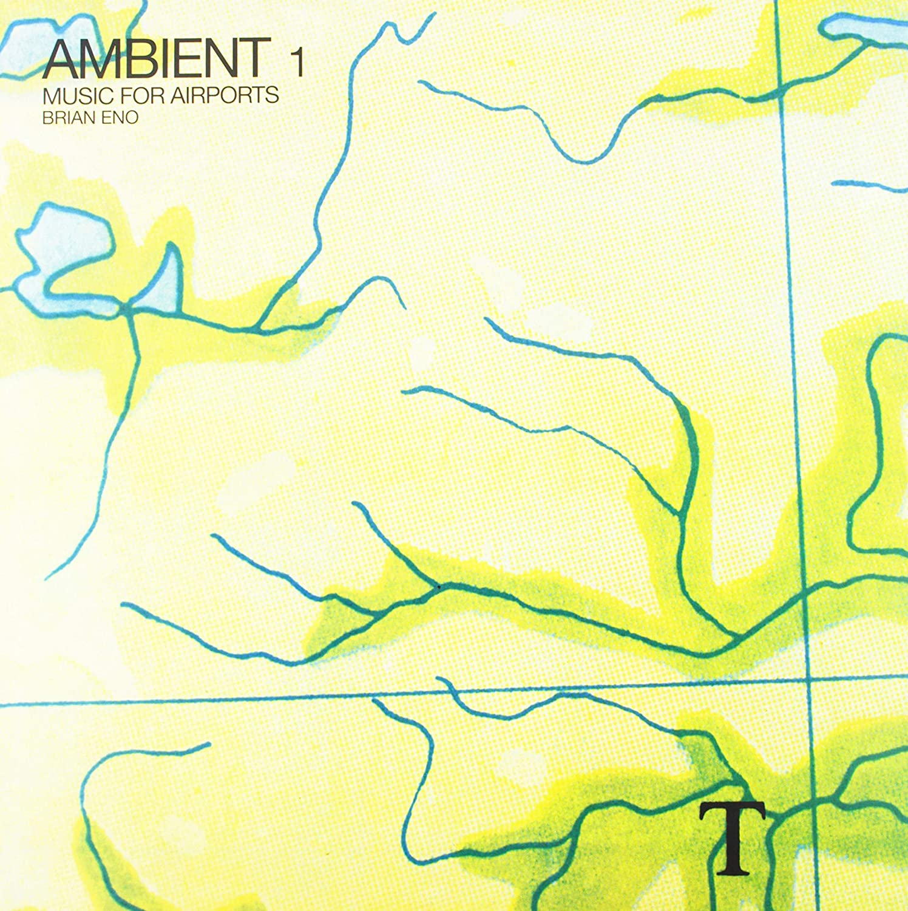
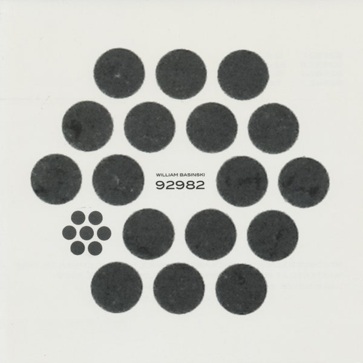

What is ambient music?
Ambient Music: Describing the Indescribable
Ambient music is a genre of music that emphasizes tone and atmosphere over traditional musical structure or rhythm. A form of instrumental music, it may lack net composition, beat, or structured melody. It uses textural layers of sound which can reward both passive and active listening and encourage a sense of calm or contemplation. The genre is said to evoke an "atmospheric", "visual", or "unobtrusive" quality. Nature soundscapes may be included, and the sounds of acoustic instruments such as the piano, strings and flute may be emulated through a synthesizer. The genre originated in the 1960s and 1970s, when new musical instruments were being introduced to a wider market, such as the synthesizer. It was presaged by Erik Satie's furniture music and styles such as Jamaican dub music and German electronic music, but was prominently named and popularized by British musician Brian Eno in 1978 with his album Ambient 1: Music for Airports; Eno opined that ambient music "must be as ignorable as it is interesting." It saw a revival towards the late 1980s with the prominence of house and techno music, growing a cult following by the 1990s. Ambient music may have elements of new-age music and drone music, as some works may use sustained or repeated notes. Ambient music did not achieve large commercial success, being criticized as having a "boring" and "over-intellectual" sound. Nevertheless, it has attained a certain degree of acclaim throughout the years, especially in the Internet age. Due to its relatively open style, ambient music often takes influences from many other genres, ranging from classical, avant-garde music, folk, jazz, and world music, amongst others.
Listen: Brian Eno's "Lost in the Humming Air"
Brian Eno:
Eno is often considered the father of ambient music, and the album that really earned him that reputation was 1978’s Music for Airports. The album consisted of four sparse tracks, and was essentially intended to blend into the atmosphere of wherever it was being played. True to its name, it actually was played at New York’s LaGuardia Airport in the early 1980s. This was the album that officially made ambient music a thing, but throughout his career, Eno made several other albums that would come to define the genre. One of Eno’s most impressive — and best known — ambient works is 1983’s Apollo: Soundtracks and Stories. This was a soundtrack album originally made for a film about the Apollo missions to the moon. The movie was eventually re-titled For All Mankind, and would use some of the tracks from the album. Really, though, the album has taken on a life independent from the film, and it’s one of most beautiful albums. The song “An Ending (Ascent)” in particular, is indicative of what Eno was able to create within the ambient realm.
William Basinski
William Basinski is an experimental composer, sound sculptor, and video artist based in Los Angeles, California. He is a relentless experimentalist obsessed with reel-to-reel tape decks, splicing tape and spindling it. His musical signature is evidenced, interestingly enough, by deeply emotional sounds filled with multiple tones, drones, textures, and shades that are as hauntingly beautiful as they are somber. While he's best-recognized for his career-defining 2002 album The Disintegration Loops, Basinski recorded and released new music prolifically, expanding on his beautiful and emotionally resonant sounds with albums like 2020's mournful Lamentations. Basinski is a classically trained musician. He was born in Houston and undertook his first musical studies on the clarinet at Richardson High School -- an instrument he continues to play. Upon graduation, he studied saxophone and composition at North Texas State University. A teacher introduced him to the music of John Cage, which proved influential. A little later, he encountered Steve Reich's Music for 18 Musicians and Brian Eno's Music for Airports, and the first two albums by Fripp and Eno. Influenced by tape loops and delay, Basinski began his own experimentation, putting a piece of cellophane tape over the erase head of a Sony Walkman, then dubbing his own compositions played on electric piano. He furthered these on two full-sized reel-to-reel decks that he continues to use.
Ambient Music Genres
Possible Tools for making Ambient Music
- Computer
- iMac
- MacBook
- Windows PC
- Synthesizer
- Moog One
- Korg Minilogue
- Waldorf Blofeld
- Dave Smith Instruments OB-6
- Digitial Audio Workstation (DAW)
- Ableton Live
- Cubase
- FL Studio
- Pro Tools
- Sonar Cakewalk
- Logic
- Recording Equipment
- Microphones
- Tape Machine
- Field Recorder (Zoom Microphones)
- Guitar Amps
- Keyboards
- Cassette Players
- Plugins
- Synth VSTs (Serum, Wavetable)
- Flangers/Phasers
- Samplers
- Reverb (lots of reverb!)
- Creativity